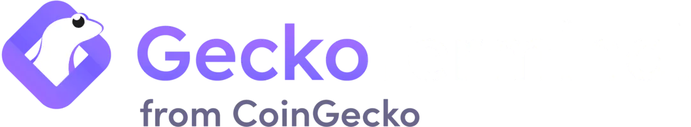
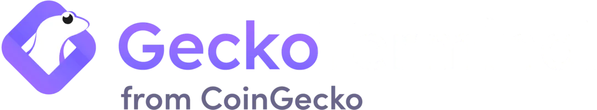

About $Slerf

$SLERF
Slerf is a memecoin on bitrock inspired by slerf on solana as one of the best memecoin of 2024. Taking inspiration from Slerf on Solana ,slerf on bitrock decided to burn 50% of it's supply too.
Our goal is to recreate the pump on slerf on solana with the help with of community and hardwork. Join in one the fun and don't miss the journey.
$SLERF MISSION
$SLERF ON BITROCK MISSION
Slerf's goal is to become to biggest memecoin on brock chain . Through the power of community and adequate marketing

 
